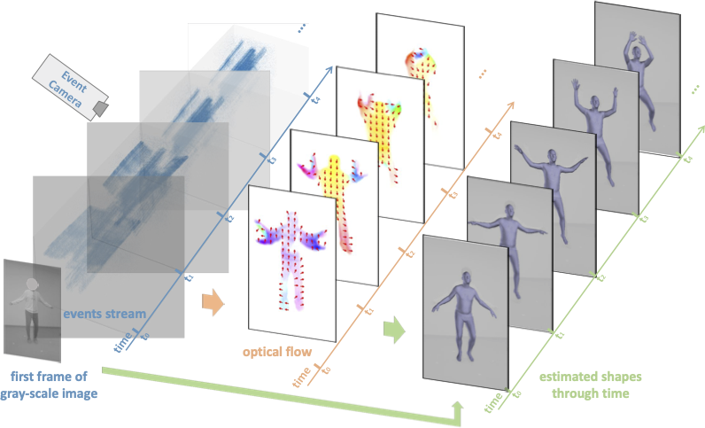
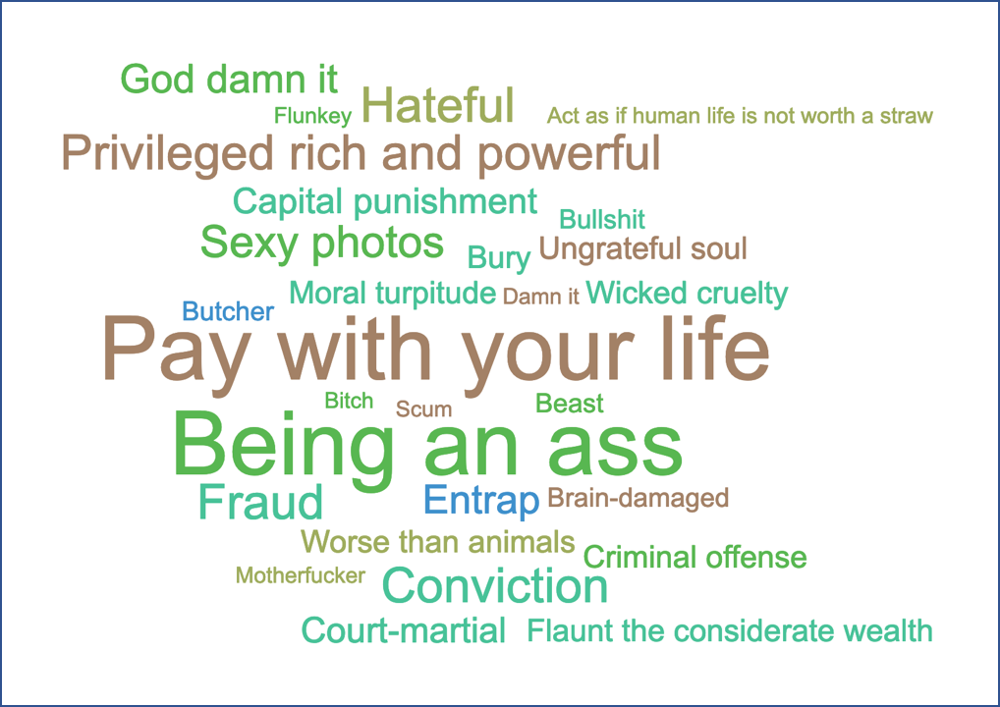
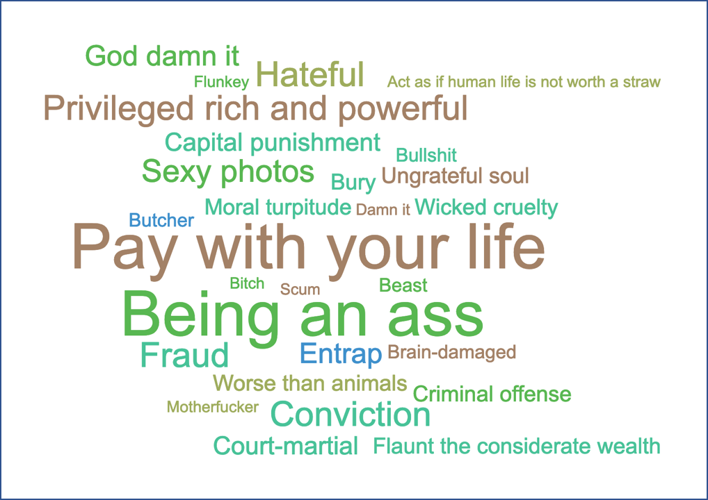

|
Chuan Guo Ph.D Student University of Alberta Edmonton cguo2 at ualberta.ca [GitHub] [Google Scholar] [Download CV] |
I'm a second year Ph.D. student in the Vision and Learning Lab at University of Alberta, under the supervision of Prof.Li Cheng . My works mainly focus on 3D human behavior understanding and modeling. Prior to UoA, I had two-year research experience in the Multimedia Group at Institute of Computing Technology, Chinese Academy of Sciences. Before that, I obtained my bachelor degree from Software Engineering College at Jilin University in 2017.
News
[Nov 2021] Our work on action-based human video generation & animation was accepted to IJCV.[July 2021] Our work on event-based human shape estimation was accepted to ICCV 2021.
[July 2020] Our work on action-conditioned human motion generation was accepted to ACM MultiMedia 2020. A 3D human motion dataset, HumanAct12, which containes both fine-grained and coarse-grained action annotation of human motions was released. Check it out.
Publications

|
Action2video: Generating Videos of Human 3D Actions
Chuan Guo, Xinxin Zuo, Sen Wang, Xinshuang Liu, Shihao Zou, Minglun Gong, Li Cheng To Appear in IJCV, 2021. [Paper] [Bibtex] |

|
Human Pose and Shape Estimation from Single Polarization Images
Shihao Zou, Xinxin Zuo, Sen Wang, Yiming Qian, Chuan Guo, Wei Ji, Jingjing Li, Minglun Gong, Li Cheng In Arxiv, 2021. [Paper] [Bibtex] |
|  |
EventHPE: Event-based 3D Human Pose and Shape Estimation
Shihao Zou, Chuan Guo, Xinxin Zuo, Sen Wang, Pengyu Wang, Xiaoqin Hu, Shoushun Chen, Minglun Gong, Li Cheng In ICCV, 2021. [Paper] [Bibtex] |

|
Action2Motion: Conditioned Generation of 3D Human Motions
Chuan Guo, Xinxin Zuo, Sen Wang, Shihao Zou, Qingyao Sun, Annan Deng, Minglun Gong, Li Cheng In MultiMedia, 2020. [Paper] [Webpage] [Code] [Video] [Bibtex] |
 

|
DEAN: Learning Dual Emotion for Fake News Detection on Social Media Chuan Guo, Juan Cao, Xueyao Zhang, Kai Shu, Huan Liu In ArXiv, 2019. [Paper] |
Reviewer Recognitions
IEEE T-MM, IEEE T-NNLS, Pattern Recognition, Machine LearningEMNLP 2021
ACML 2020, 2021
Awards
Alberta Graduate Excellence Scholarship, 2021National Scholarship, 2015
Excellent Student of Jilin University, 2015
Qihoo 360 Scholarship, 2016
Misc
I'm from Chengdu, China. My Chinese name is 郭川.This website template is borrowed from here.